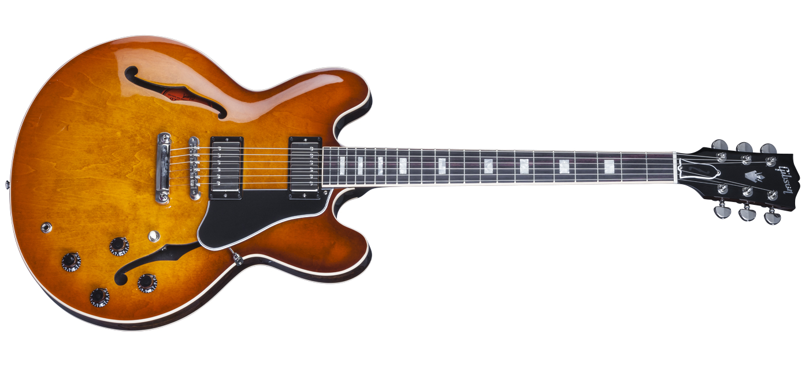
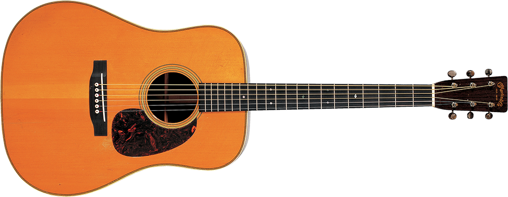

Pay homage to some of the most influential pieces of timber ever made!
Gibson Les Paul
Arguably the most iconic guitar of all time. This was developed by the man it was named after, the one and only Mr. Les Paul. It has sat in the hands of some of the greatest players of all time. Who? Well theres Slash, Jimmy Page, Johnny Marr, Duane Allman, Eric Clapton, Pete Townshend just to name but a few.
Fender Stratocaster
Again, arguably the most iconic guitar of all time. Developed by Mr. Leo Fender, who strangely was not a guitar player, this is arguably the most versatile guitar of all time. You name a genre, it's more than liekly that this six-stringed devil has featured at some point. If it's good enough for Hendrix it's good enough for any mere mortal! Need we say any more?
Gibson ES-335

The original rock and roll guitar! You know that riff from the end of Back to the Future? Yup, you guessed, that had ES-335 all over it. This was arguably, the guitar of the 50's and early 60's. Such a beautiful guitar that Noel Gallagher actually decided he wanted to be a rockstar based solely on Johnny Marr's red ES-335.
Fender Telecaster
The guitar that really started it all. This is just an absolute classic with a pure minimalist design, the design with which Leo Fender beat Gibson to market with int he race for the first solid body guitar! This is once again an extremely versatile guitar by Fender but is arguably best suited to either a completely clean channel or some light distortion. Just listen to Can't Get No (Satisfaction) by the Stones, yup. Tele.
Gibson SG
Here's one for the original metalheads. This unique guitar was designed as the original shredder, with the intention to have the fastest guitar neck in the world. Who are we to argue? Just ask Tommy Iommi or Angus Young, two of the most powerful guitarists ever, what did they wield? That's right, the SG.
Fender Jaguar
Designed as the original surf guitar back in the early 60's it initially found fame in the hands of the beach boys. However, as rock n roll set in, the Jag was forgotten. Until the 90's when the alternative scene hit hard with bands like the Red Hot Chili Peppers and Nirvana. Think of that Under the Bridge intro, that is the tone of a pure, compressed, Fender Jaguar, what a tone!
Gibson Flying V
This was an experimental guitar from the lates 50's. What a truly iconic design. Can you imagine seeing this in the 50's?! This is a true classic of heavy rock, even Hendrix was convinced enough to set down his Fenders from time to time to shred on this unique guitar.
RickenBacker 330
A unique guitar in more ways than one. First of all is that assymetrical appearance with the beautiful pick-guard and then there is the sound. This is arguably the most jangly sound you can imagine, think of This Charming Man by the Smiths. That jangle is all down to the 330, how charming!
Gretsch White Falcon
This guitar was not meant to exist but was so popular as a prototype that they decided the had to put it into production immediately. The original models are so popular they can fetch into the tens and sometimes hundreds thousands mark! Guitar masters like Neil Young, Jack White and John Frusciante have all used this versatile beast.
Martin D-28

Martin are the kings of the acoustic guitar. Th D-28 is the king of the Martin acoustics. Ergo, the D-28 is the king of the acoustics, or at least we think so. This guitar oozes class, from the highest quality of its wood to the smoothest sound which sets it apart form the competition. Kurt Cobain and Eric Clapton chose these for their respective unplugged session. Needless to say, we aren't all that surprised.
Gibson Hummingbird
TThis guitar is so popular and universally loved it finished above the Martin D-28 in a poll on the best acoustic guitars. If that doesn't say something about the quality of this trunk then we don't know what will. The fact Bob Dylan wrote the majority of his classics on here doesn't harm it's reputation either....
Hofner 500/1
Well we weren't going to leave the Basses out of this. After all, they are guitars too and without them, who's to say some of our favourite songs would not fall apart? Anyways, this has to be the most famous of them all, we have just two words to say: Paul. McCartney.